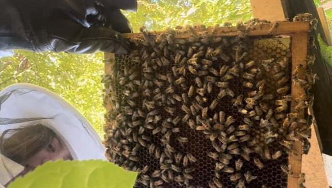

Books

Books To Read
- Beekeeping For Beginners by Amber Bradshaw : Wonderful starter book
- Honeybee Democracy by Thomas D. Seeley : Offers insight into technical findings of bees, as well as ideologies of their existence.
- The Cavity Compromise by Adrian Quiney : How to leverage bees natural capabilities
Helpful Resources
